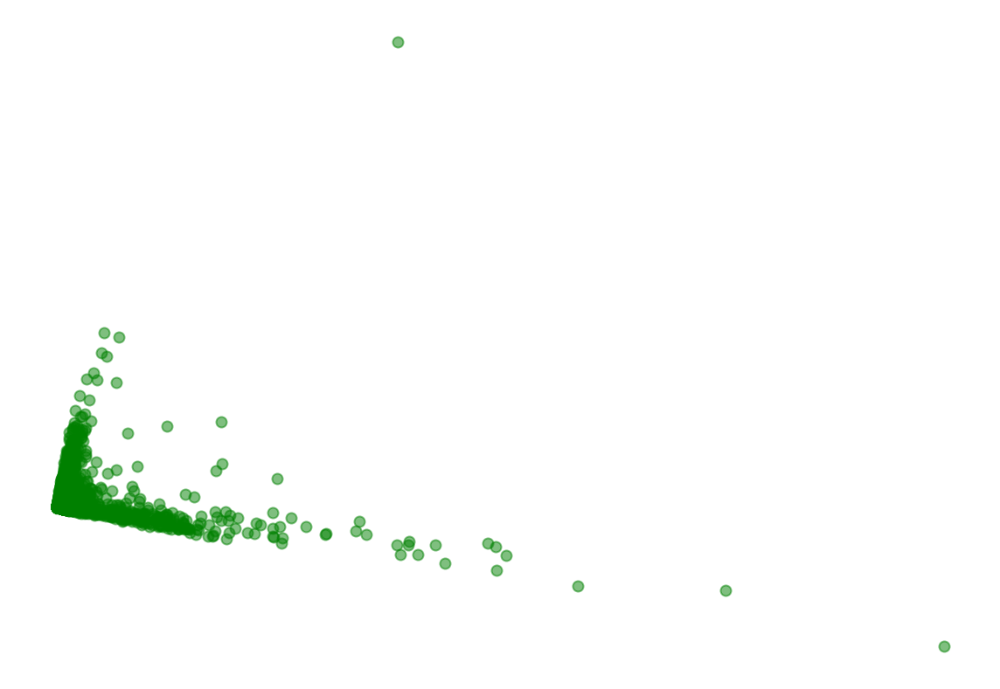
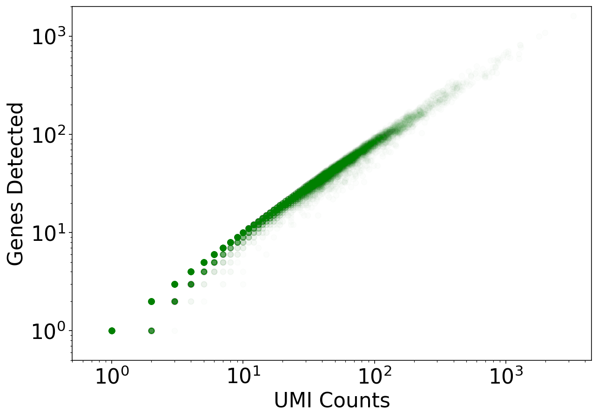

Introduction to single-cell RNA-seq I: pre-processing and quality control¶
This Python notebook demonstrates the use of the kallisto and bustools programs for pre-processing single-cell RNA-seq data (also available as an R notebook). It streams in 1 million C. elegans reads, pseudoaligns them, and produces a cells x genes count matrix in about a minute. The notebook then performs some basic QC. It expands on a notebook prepared by Sina Booeshaghi for the Genome Informatics 2019 meeting, where he ran it in under 60 seconds during a 1 minute "lightning talk".
The kallistobus.tools tutorials site has a extensive list of follow-up tutorials and vignettes on single-cell RNA-seq.
1 2 3 | |
The notebook was written by A. Sina Booeshaghi and Lior Pachter. If you use the methods in this notebook for your analysis please cite the following publication, on which it is based:
- Melsted, P., Booeshaghi, A.S. et al. Modular and efficient pre-processing of single-cell RNA-seq. bioRxiv (2019). doi:10.1101/673285
Setup¶
1 2 3 | |
Install python packages¶
1 2 3 4 5 6 | |
1 2 3 4 5 6 7 8 9 10 | |
1 2 3 4 | |
CPU times: user 81.7 ms, sys: 19.2 ms, total: 101 ms
Wall time: 10 s
Download required files¶
1 2 3 4 5 6 7 | |
--2021-07-07 18:38:00-- https://caltech.box.com/shared/static/82yv415pkbdixhzi55qac1htiaph9ng4.idx
Resolving caltech.box.com (caltech.box.com)... 107.152.25.197
Connecting to caltech.box.com (caltech.box.com)|107.152.25.197|:443... connected.
HTTP request sent, awaiting response... 301 Moved Permanently
Location: /public/static/82yv415pkbdixhzi55qac1htiaph9ng4.idx [following]
--2021-07-07 18:38:00-- https://caltech.box.com/public/static/82yv415pkbdixhzi55qac1htiaph9ng4.idx
Reusing existing connection to caltech.box.com:443.
HTTP request sent, awaiting response... 301 Moved Permanently
Location: https://caltech.app.box.com/public/static/82yv415pkbdixhzi55qac1htiaph9ng4.idx [following]
--2021-07-07 18:38:00-- https://caltech.app.box.com/public/static/82yv415pkbdixhzi55qac1htiaph9ng4.idx
Resolving caltech.app.box.com (caltech.app.box.com)... 107.152.25.201
Connecting to caltech.app.box.com (caltech.app.box.com)|107.152.25.201|:443... connected.
HTTP request sent, awaiting response... 302 Found
Location: https://public.boxcloud.com/d/1/b1!nAdT7HbMqSV2-u8uTTCudCYkwKYLV2tsQJOqE7FGwSMUnjwZZXY9VF2lnh-slpFJJ9ZfKUM1NoetaCvcUemBOKSnqcwcy9lLgSH3GsstN4twPjC45-6Ukm43LjqPm_0dHFEafE28tFmQJ2BnovfBjxKMgbKPDcA09Ec5jpLVqgstxCBldBBA5uxQ6hMq6PtjUvjanuzjLdTdUiI-UAJkcpX_BChWREi3PesYVk8j-wM69vI1tJ3iXYdnMduqXrjep_pa6Pr4j7SIDo4RTSj2jyrcGXE8z77dgTSKg5ZV-JqxO-moGLOappHAiWBsbebHn8dCTuHx9oZlqBauLv0DhvSkKtmSzwqYiwdUaBLDyI0AxbGY96u-lxIWoEVxYQBQQBNdnDR-W76f4WoLiV2qK9zK5veum2KluNaMYdXpg_CI1RbPw9Hb5vE7nubzBc6Fa_XvWRnbtqz1_GehvCwRGNM9Pac8PznO6pJz66nxN0qyd5wDw16ti_iQIDNndeOOlZx78nBLHO_VaS1GZH-bkzpHMrd8K4hha-M-BJ5o5RpsYZcHy8StB8R-kJNkmrddQvkIpuWb2vwl0FqaQOlx2BlWLLINMrXCWyRppGvdAf4pimgdLgzq-To-rpPfXJ89vqXW79fttpe044QAcQTAOFCsLSBqm3KQiwfR2oxnlJe744o0Qp0kRKQgEIANMHRnr9NRBgWTmkZ-vyeT2X0YEJh-3w3HLo8XzeMuz_95a89zf-dPWhkbTGRHlRTftYxgUQTo1kkL0D_5BXGWvnLgHhgRcdKFNW0pjd4Z0i3n4NYBrxIKb6XNnN5kprV_4Q3W9-M1spIWR0r4m-nuLMyjU7_LCtLH8VIEKlT1vBgDSdkb79k_EKdoiO1-DdhJU3WrCTt9h9_VYsg9j3dO5aC5FDDv49TkBOVGs-yYw73bjtcT7r1MPXKh6HCErASPktoijVtCJOf5aoOIRNnXdRlusfVZRCdJh5PQloCBeMgCbtBRznpq-oOvjCK-XcJZIVH8FE5zrFc-3u0qbTUc3HBQ1WTGXZ2NGp_OzaCzkfW0FtNhA-cPit3-b6YGCatwdeCg83O6hUsZ4bpuCSfJIdX6a32_wv9xOdMRzwbEUVuR0DCTJQFkl2H-jb6VHPmnnVTTUwon8q8Csqk0OP5xK53TxRwge9QAM-wojp4KVTaI59IWguqXuFnEH66vv8-c8hlYeoHUkL7dJ-j7bhvyXHdZfZXHGDDBYNSjghPddkvp2Hr856-K5r1muA1qFEZ5eRhPNFqlJIbs3SZTtY8Sis2PiSRZNWT0vZ2oOfALEGZHpzd4q29ieLMI4rwMGQ22099h6Up0JeXERR-t-jMSMCN1_eNMz34amOgsnGpX-J5OlZzDVUB0uJ2Uf3vdtRKaa97OjfzwmtN9NYbPh_u87DYUUsfKh7PVSZzoCU0f8l8NdVeZlA../download [following]
--2021-07-07 18:38:00-- https://public.boxcloud.com/d/1/b1!nAdT7HbMqSV2-u8uTTCudCYkwKYLV2tsQJOqE7FGwSMUnjwZZXY9VF2lnh-slpFJJ9ZfKUM1NoetaCvcUemBOKSnqcwcy9lLgSH3GsstN4twPjC45-6Ukm43LjqPm_0dHFEafE28tFmQJ2BnovfBjxKMgbKPDcA09Ec5jpLVqgstxCBldBBA5uxQ6hMq6PtjUvjanuzjLdTdUiI-UAJkcpX_BChWREi3PesYVk8j-wM69vI1tJ3iXYdnMduqXrjep_pa6Pr4j7SIDo4RTSj2jyrcGXE8z77dgTSKg5ZV-JqxO-moGLOappHAiWBsbebHn8dCTuHx9oZlqBauLv0DhvSkKtmSzwqYiwdUaBLDyI0AxbGY96u-lxIWoEVxYQBQQBNdnDR-W76f4WoLiV2qK9zK5veum2KluNaMYdXpg_CI1RbPw9Hb5vE7nubzBc6Fa_XvWRnbtqz1_GehvCwRGNM9Pac8PznO6pJz66nxN0qyd5wDw16ti_iQIDNndeOOlZx78nBLHO_VaS1GZH-bkzpHMrd8K4hha-M-BJ5o5RpsYZcHy8StB8R-kJNkmrddQvkIpuWb2vwl0FqaQOlx2BlWLLINMrXCWyRppGvdAf4pimgdLgzq-To-rpPfXJ89vqXW79fttpe044QAcQTAOFCsLSBqm3KQiwfR2oxnlJe744o0Qp0kRKQgEIANMHRnr9NRBgWTmkZ-vyeT2X0YEJh-3w3HLo8XzeMuz_95a89zf-dPWhkbTGRHlRTftYxgUQTo1kkL0D_5BXGWvnLgHhgRcdKFNW0pjd4Z0i3n4NYBrxIKb6XNnN5kprV_4Q3W9-M1spIWR0r4m-nuLMyjU7_LCtLH8VIEKlT1vBgDSdkb79k_EKdoiO1-DdhJU3WrCTt9h9_VYsg9j3dO5aC5FDDv49TkBOVGs-yYw73bjtcT7r1MPXKh6HCErASPktoijVtCJOf5aoOIRNnXdRlusfVZRCdJh5PQloCBeMgCbtBRznpq-oOvjCK-XcJZIVH8FE5zrFc-3u0qbTUc3HBQ1WTGXZ2NGp_OzaCzkfW0FtNhA-cPit3-b6YGCatwdeCg83O6hUsZ4bpuCSfJIdX6a32_wv9xOdMRzwbEUVuR0DCTJQFkl2H-jb6VHPmnnVTTUwon8q8Csqk0OP5xK53TxRwge9QAM-wojp4KVTaI59IWguqXuFnEH66vv8-c8hlYeoHUkL7dJ-j7bhvyXHdZfZXHGDDBYNSjghPddkvp2Hr856-K5r1muA1qFEZ5eRhPNFqlJIbs3SZTtY8Sis2PiSRZNWT0vZ2oOfALEGZHpzd4q29ieLMI4rwMGQ22099h6Up0JeXERR-t-jMSMCN1_eNMz34amOgsnGpX-J5OlZzDVUB0uJ2Uf3vdtRKaa97OjfzwmtN9NYbPh_u87DYUUsfKh7PVSZzoCU0f8l8NdVeZlA../download
Resolving public.boxcloud.com (public.boxcloud.com)... 107.152.24.200
Connecting to public.boxcloud.com (public.boxcloud.com)|107.152.24.200|:443... connected.
HTTP request sent, awaiting response... 200 OK
Length: 625579580 (597M) [application/octet-stream]
Saving to: ‘idx.idx’
idx.idx 100%[===================>] 596.60M 18.3MB/s in 36s
2021-07-07 18:38:37 (16.8 MB/s) - ‘idx.idx’ saved [625579580/625579580]
--2021-07-07 18:38:37-- https://caltech.box.com/shared/static/cflxji16171skf3syzm8scoxkcvbl97x.txt
Resolving caltech.box.com (caltech.box.com)... 107.152.25.197
Connecting to caltech.box.com (caltech.box.com)|107.152.25.197|:443... connected.
HTTP request sent, awaiting response... 301 Moved Permanently
Location: /public/static/cflxji16171skf3syzm8scoxkcvbl97x.txt [following]
--2021-07-07 18:38:37-- https://caltech.box.com/public/static/cflxji16171skf3syzm8scoxkcvbl97x.txt
Reusing existing connection to caltech.box.com:443.
HTTP request sent, awaiting response... 301 Moved Permanently
Location: https://caltech.app.box.com/public/static/cflxji16171skf3syzm8scoxkcvbl97x.txt [following]
--2021-07-07 18:38:37-- https://caltech.app.box.com/public/static/cflxji16171skf3syzm8scoxkcvbl97x.txt
Resolving caltech.app.box.com (caltech.app.box.com)... 107.152.25.201
Connecting to caltech.app.box.com (caltech.app.box.com)|107.152.25.201|:443... connected.
HTTP request sent, awaiting response... 302 Found
Location: https://public.boxcloud.com/d/1/b1!TwnLlpzLPezE9R8L30b_LgO_uHuxPS8VDrBNDz_zAbovkjbHWuXi8l8DVnDitnwQBxpu9UsNRTJjhHuGtf0lAWqWJ4yCyh1VKOVy2w6Nfcol3DGLho4ynnZFtL3kXIRgm91nRVsXEAe96HSf8PtmkNMQ99kFT74uchBiDtS7wcSZZzwaEMxJbaMhSUchoelmxesP3QeOIKfb--kuYOqovncop33DB8WttbBUNDi-vYBZXMRKn3zoPVcDCYqJxG9llT2DpQ_JIegvNsa0X9rvzrQgqZrzQcsYyByQIWzTE63JxbGd0yUnKrTWN3jzkeXaXBepKUaGgtTNxkC0CKBjyQskBB3zMBhaPv713cFQrW5HoqrccKKRq488DIjfs2mLTs0yRjGkoYakhSIPnxglE9PTNslfKjwJfemxvf7DM7bCDUi4Q8h9jv8ClAbtJ-d5rVq4E65PUqNqv9ofsYn2dSPC9KWWTmaeVTV9BtHm7cHz4sBeG_kNG-Nph72y3XI9sl3cCWBlgfNwVbLg8hO3yFJIjUR4jtN0VvbYjTWux7A-NW-vCsn-bAa7A9SqZnL2b96ipj_NXB9jhC4iZ3zuWX467PR6F0iYGUACbP7ioGTiFM7cD5uVAZGDjvZN-K4JSe3Qq0cknEJpWLyh6vlWP2hN_N0nSlCTMnue3N9_kxsIEzDlq7Q47Qbtbhe4KrnFDWvL_0T13ckBkeQOxBYD7X2sLTJxbghpBjJbYTiO7eSCc4CJoiXIzb0BbeWHSZc9HueW6N_B0bC9HHnGttOqHPGOZiU1-H4MKlMvS7Zz612SJ4rLz0k71piAcSzfKRcwraflYqg4QdXll5byM7rt_YGfKp9uCtq-uh54ie8Nw0AUxLkI38xb18UOXCZT2wa3vL2eCsMwJLjg-yXyuBZ6jVE0DXQrPP7rWbbOTD3UHe_jfSo3S_H_Eor7s8_Z7aR70KBsmd-r4NXwIA7Rt7F1GSHBGE7UxtVgrSQ2zXvI8eQPwIXVGrsnqzu9MGzpt_qH_U0Pj9jRsR7vwajXzDq-YoMWwRU5ad3wX0gQyzA_8B1_AQ-6xtgpA0_WaY5kz01s4w86Dswu6kQO35RzXeKEU43bl9zs_SPvSI9KaOJ4uDAAc7mdKVmeG6mugD78-13YeN1tfDVt15-AWfQijJkBZIfnPzTd-WhKcgomn6MfxGuP9VDEGso5Y1i_sMQfPvxChuKIjoPSbbmqdDyX0ml4lC4nQ9NFAaFTvlsViSvoNaHiQImpD-viVJ3tUtF9L_ojonKM1YVA8Y1um6RUFW7v19TrNaw_kTDoSYygZgcug76QN8DRPwOjtBm0mVU64V7VwJXu3PvWqUn4mmcoIDpTNms_exKJA_p80qHmDJYYvghGMD4KejrtAA3bRiN9UrGLugpsaY338bU./download [following]
--2021-07-07 18:38:37-- https://public.boxcloud.com/d/1/b1!TwnLlpzLPezE9R8L30b_LgO_uHuxPS8VDrBNDz_zAbovkjbHWuXi8l8DVnDitnwQBxpu9UsNRTJjhHuGtf0lAWqWJ4yCyh1VKOVy2w6Nfcol3DGLho4ynnZFtL3kXIRgm91nRVsXEAe96HSf8PtmkNMQ99kFT74uchBiDtS7wcSZZzwaEMxJbaMhSUchoelmxesP3QeOIKfb--kuYOqovncop33DB8WttbBUNDi-vYBZXMRKn3zoPVcDCYqJxG9llT2DpQ_JIegvNsa0X9rvzrQgqZrzQcsYyByQIWzTE63JxbGd0yUnKrTWN3jzkeXaXBepKUaGgtTNxkC0CKBjyQskBB3zMBhaPv713cFQrW5HoqrccKKRq488DIjfs2mLTs0yRjGkoYakhSIPnxglE9PTNslfKjwJfemxvf7DM7bCDUi4Q8h9jv8ClAbtJ-d5rVq4E65PUqNqv9ofsYn2dSPC9KWWTmaeVTV9BtHm7cHz4sBeG_kNG-Nph72y3XI9sl3cCWBlgfNwVbLg8hO3yFJIjUR4jtN0VvbYjTWux7A-NW-vCsn-bAa7A9SqZnL2b96ipj_NXB9jhC4iZ3zuWX467PR6F0iYGUACbP7ioGTiFM7cD5uVAZGDjvZN-K4JSe3Qq0cknEJpWLyh6vlWP2hN_N0nSlCTMnue3N9_kxsIEzDlq7Q47Qbtbhe4KrnFDWvL_0T13ckBkeQOxBYD7X2sLTJxbghpBjJbYTiO7eSCc4CJoiXIzb0BbeWHSZc9HueW6N_B0bC9HHnGttOqHPGOZiU1-H4MKlMvS7Zz612SJ4rLz0k71piAcSzfKRcwraflYqg4QdXll5byM7rt_YGfKp9uCtq-uh54ie8Nw0AUxLkI38xb18UOXCZT2wa3vL2eCsMwJLjg-yXyuBZ6jVE0DXQrPP7rWbbOTD3UHe_jfSo3S_H_Eor7s8_Z7aR70KBsmd-r4NXwIA7Rt7F1GSHBGE7UxtVgrSQ2zXvI8eQPwIXVGrsnqzu9MGzpt_qH_U0Pj9jRsR7vwajXzDq-YoMWwRU5ad3wX0gQyzA_8B1_AQ-6xtgpA0_WaY5kz01s4w86Dswu6kQO35RzXeKEU43bl9zs_SPvSI9KaOJ4uDAAc7mdKVmeG6mugD78-13YeN1tfDVt15-AWfQijJkBZIfnPzTd-WhKcgomn6MfxGuP9VDEGso5Y1i_sMQfPvxChuKIjoPSbbmqdDyX0ml4lC4nQ9NFAaFTvlsViSvoNaHiQImpD-viVJ3tUtF9L_ojonKM1YVA8Y1um6RUFW7v19TrNaw_kTDoSYygZgcug76QN8DRPwOjtBm0mVU64V7VwJXu3PvWqUn4mmcoIDpTNms_exKJA_p80qHmDJYYvghGMD4KejrtAA3bRiN9UrGLugpsaY338bU./download
Resolving public.boxcloud.com (public.boxcloud.com)... 107.152.25.200
Connecting to public.boxcloud.com (public.boxcloud.com)|107.152.25.200|:443... connected.
HTTP request sent, awaiting response... 200 OK
Length: 1010392 (987K) [text/plain]
Saving to: ‘t2g.txt’
t2g.txt 100%[===================>] 986.71K --.-KB/s in 0.04s
2021-07-07 18:38:38 (25.1 MB/s) - ‘t2g.txt’ saved [1010392/1010392]
CPU times: user 361 ms, sys: 96.2 ms, total: 457 ms
Wall time: 38.2 s
Pseudoalignment and counting¶
In this notebook we pseudoalign 1 million C. elegans reads and count UMIs to produce a cells x genes matrix. Instead of being downloaded, the reads are streamed directly to the Google Colab notebook for quantification. See this blog post for more details on how the streaming works.
The data consists of a subset of reads from GSE126954 described in the paper:
- Packer, J., Zhu, Q. et al. A lineage-resolved molecular atlas of C. elegans embryogenesis at single-cell resolution. Science (2019). doi:10.1126/science.aax1971
Run kallisto and bustools¶
1 2 3 4 5 6 | |
[2021-07-07 18:38:39,095] INFO Piping https://caltech.box.com/shared/static/fh81mkceb8ydwma3tlrqfgq22z4kc4nt.gz to tmp/fh81mkceb8ydwma3tlrqfgq22z4kc4nt.gz
[2021-07-07 18:38:39,096] INFO Piping https://caltech.box.com/shared/static/ycxkluj5my7g3wiwhyq3vhv71mw5gmj5.gz to tmp/ycxkluj5my7g3wiwhyq3vhv71mw5gmj5.gz
[2021-07-07 18:38:39,100] INFO Generating BUS file from
[2021-07-07 18:38:39,100] INFO tmp/fh81mkceb8ydwma3tlrqfgq22z4kc4nt.gz
[2021-07-07 18:38:39,100] INFO tmp/ycxkluj5my7g3wiwhyq3vhv71mw5gmj5.gz
[2021-07-07 18:38:55,315] INFO Sorting BUS file ./output.bus to tmp/output.s.bus
[2021-07-07 18:38:57,856] INFO Whitelist not provided
[2021-07-07 18:38:57,856] INFO Copying pre-packaged 10XV2 whitelist to .
[2021-07-07 18:38:57,948] INFO Inspecting BUS file tmp/output.s.bus
[2021-07-07 18:38:58,400] INFO Correcting BUS records in tmp/output.s.bus to tmp/output.s.c.bus with whitelist ./10xv2_whitelist.txt
[2021-07-07 18:39:12,816] INFO Sorting BUS file tmp/output.s.c.bus to ./output.unfiltered.bus
[2021-07-07 18:39:15,273] INFO Generating count matrix ./counts_unfiltered/cells_x_genes from BUS file ./output.unfiltered.bus
CPU times: user 243 ms, sys: 29.9 ms, total: 273 ms
Wall time: 37.4 s
Exercises¶
kbcan quantify data that is streamed from a URL as in the example above, or can read in data from disk. Is it faster to stream data, or to download it first and then quantify it from disk?
1 2 3 4 | |
- The -t option in
kbsets the numnber of threads to be used. The Google Colab machine you are running on has two threads. If you run this notebook locally you can increase the number of threads beyond 2. As the number of threads is increased the running time decreases proportionately, although eventually the speed at which reads can be loaded from disk is a limiting factor. Verify that runningkbwith 1 thread on Google Colab takes about twice as long as with 2 threads.
1 2 | |
Basic QC¶
Represent the cells in 2D¶
1 2 | |
1 2 3 4 | |
1 2 3 4 5 6 7 | |

While the PCA plot shows the overall structure of the data, a visualization highlighting the density of points reveals a large number of droplets represented in the lower left corner.
1 2 3 4 5 6 7 8 9 10 11 12 13 14 15 16 17 18 19 20 21 22 23 24 25 26 27 28 29 30 31 | |

The following plot helps clarify the reason for the concentrated points in the lower-left corner of the PCA plot.
1 2 | |
Test for library saturation¶
1 2 3 4 5 6 7 8 9 10 11 12 13 14 | |

Here we see that there are a large number of near empty droplets. A useful approach to filtering out such data is the "knee plot" shown below.
Examine the knee plot¶
The "knee plot" was introduced in the Drop-seq paper: - Macosko et al., Highly parallel genome-wide expression profiling of individual cells using nanoliter droplets, 2015. DOI:10.1016/j.cell.2015.05.002
In this plot cells are ordered by the number of UMI counts associated to them (shown on the x-axis), and the fraction of droplets with at least that number of cells is shown on the y-axis:
1 2 3 4 5 6 7 8 9 10 11 | |

1 2 3 4 | |
Exercises¶
- The "knee plot" is sometimes shown with the UMI counts on the y-axis instead of the x-axis, i.e. flipped and rotated 90 degrees. Make the flipped and rotated plot. Is there a reason to prefer one orientation over the other?
1 2 3 4 5 6 7 8 9 10 11 | |
For more information on this exercise see Rotating the knee (plot) and related yoga.
-
The PCA subspaces form a [flag](https://en.wikipedia.org/wiki/Flag_(linear_algebra). This means, for example, that regardless of the number of dimensions chosen for the PCA dimensionality reduction, the 2D subspace remains the same. Verify this empirically.
-
As you increase the number of dimensions for the PCA reduction, you can also view the relationship between different suspaces. Explore this by changing the subspace dimensions visualized.
1 2 3 4 5 6 7 8 9 10 11 12 13 14 15 16 | |

Discussion¶
This notebook has demonstrated the pre-processing required for single-cell RNA-seq analysis. kb is used to pseudoalign reads and to generate a cells x genes matrix. Following generation of a matrix, basic QC helps to assess the quality of the data.
1 2 | |
102.33 seconds
Feedback: please report any issues, or submit pull requests for improvements, in the Github repository where this notebook is located.
1 | |